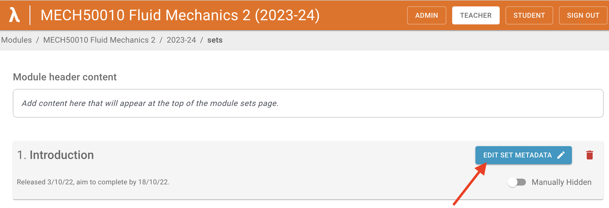
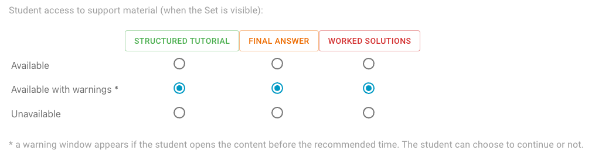
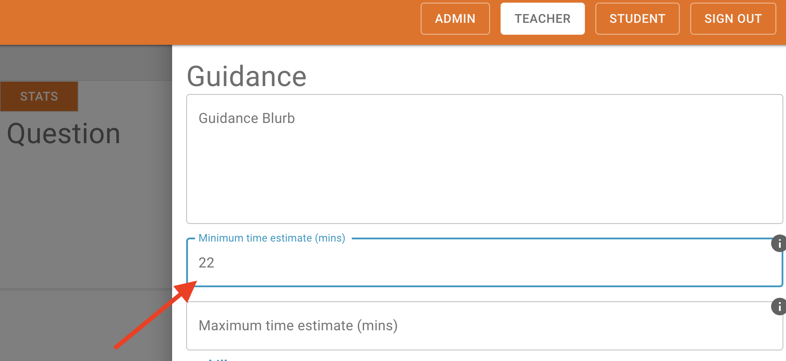
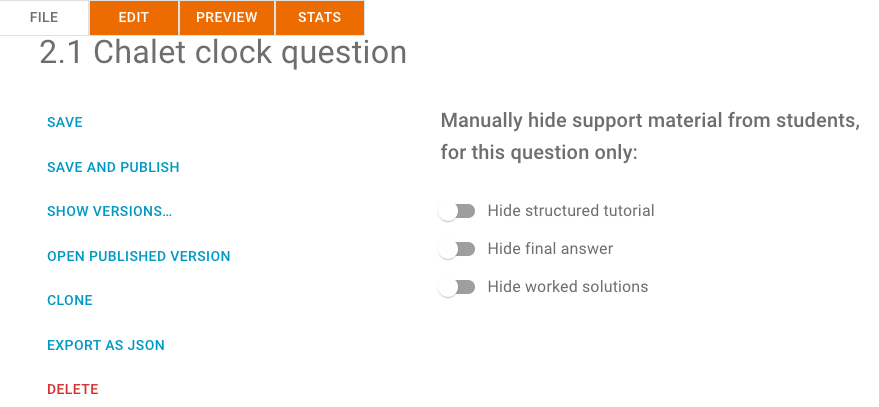
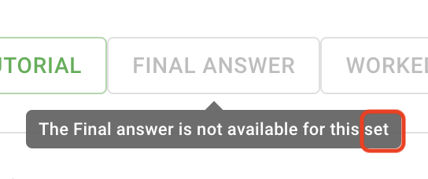
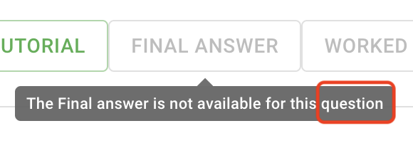
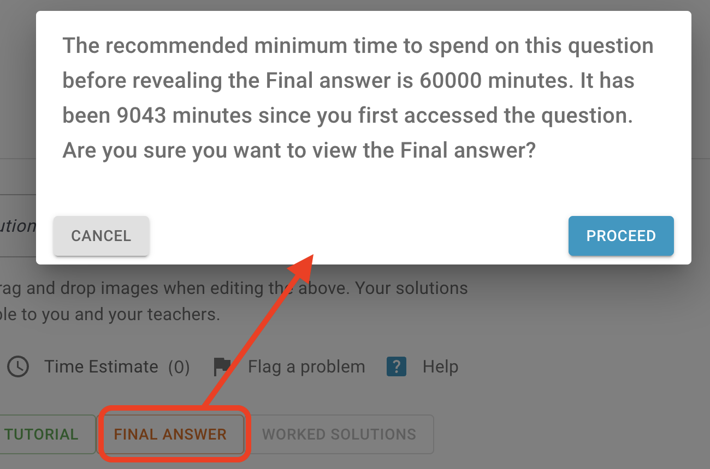

Access control
Modules
Module access for students is controlled by enrolling student users. More details to be added here.
Sets
Set access is granted to all users enrolled on a module, but the Set can be hidden by the teacher. Two methods can be used to hide a Set:
- Start and end dates (both optional) can be created in the Set Metadata.
- The Set can me manually hidden, which overrides the above settings.
Support material within questions
The following types of support materials are available to students in the help section:
- Sructured tutorial
- Final answer
- Worked solutions
Two methods can be used to hide support material:
Configuring student access at the set level
Open the Edit Set Metadata page by clicking on the Edit Set Metadata button in the list of sets:

The page contains the Student access to support material section:

Access to each support material type can be set to one of the following options:
Available
Students can open this support material type without any restrictions.
This is valid for all questions in the set except those for which the support material access is set to be unavailable at the question level (see below).
Available with warnings
A warning window appears if the studen opens the content before the recommended time.
The recommended time is the Minimum time estimate (mins) which can be set on the question Guidance page:
{ width="400" }
However, the option will be changed to Available, if any of the following is true:
- The student has downloaded the PDF
- The part is marked as done
- There is no minimum time estimate set for the question
- The time now minus the time the student first accessed the question is more than the minimum time estimate
This is valid for all questions in the set except those for which the support material access is set to be unavailable at the question level (see below).
Unavailable
Students cannot open any support material for any question in the set.
This is valid for all questions in the set, even those for which the support material access is set to Available at the question level (see below).
Configuring student access at the question level
The support material access configuration at the question level is located on the File tab:

All support material is available by default, it can be changed:
- If the switch is off, then the support material is available
- If the switch is on, then the support material is unavailable
Summary overview
| Set level setting | Question level setting | Result (using Final answer as an example) | Description | Comment |
|---|---|---|---|---|
| Unavailable | N/A | { width="200" } | The Final answer is disabled | The setting at the question level is ignored |
| Available | Unavailable | { width="200" } | The Final answer is disabled | |
| Available with warnings | Unavailable | { width="200" } | The Final answer is disabled | The same result as above |
| Available with warnings | Available | { width="200" } | When the Final answer is clicked, a warning message appears | Additional conditions must be met: If any of them is not met, then the support material will be available with no warnings. |